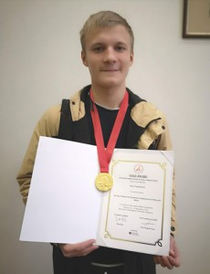

Студент І курсу ФТІ КПІ імені Ігоря Сікорського Назар Поночевний виборов золоту нагороду на Глобальному конкурсі інновацій в Сінгапурі (Advanced Innovation Global Competition 2019, AIGC 2019), який проводився 15-17 листопада.
AIGC є першим, найбільшим і найпрестижнішим конкурсом інновацій для студентів, проводиться в дусі надання унікальної і різноманітної конкурентної платформи для інновацій – https://www.aigc-singapore.com.
Всього було 200 учасників з 20 країн світу. Участь могли брати лише готові проекти, які вже готують до запуску у виробництво. У складі журі були представники Массачусетського технологічного інституту, Наньянського технологічного університету, Державного університету Малайзії та інших провідних наукових установ світу.
Назар створив сервіс Harmix, що автоматично добирає музику до відео, використовуючи технологію штучного інтелекту, який навчається гармонійно поєднувати відео з музикою на найуспішніших фільмах та відеороликах. Загалом українська команда у складі Назара Поночевного, Ольги Харасахал, Софії Петришин, Дмитра Лопушанського вибороли 4 золотих медалі у своїх номінаціях.
Перемога є черговою у низці здобутків Назара: у травні він посів призове місце на одному з найпрестижніших міжнародних конкурсів Intel ISEF 2019, який щорічно проводиться у США та збирає близько 1800 талановитих школярів з понад 70 країн світу. У жовтні цього року у Центрі інноваційного підприємництва Інституту післядипломної освіти КПІ ім. Ігоря Сікорського на урочистому закритті VIII Фестивалю інноваційних проектів «Sikorsky Challenge 2019» з Назаром Поночевним підписали договір представники Гонконгської компанії Global Virtual Design and Construction Limited про наміри інвестування та надання підтримки.